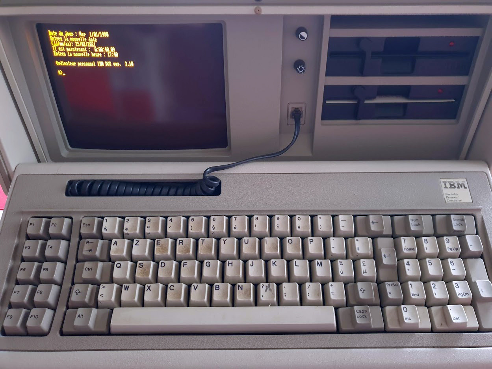

Ok, here we are.
This 1984 IBM 5155 running a 8088 at the amazing speed of 4.77Mhz support by a stunning amount of 640kb Ram and two 5 1⁄4-inch 360 KB floppy drives. Proudly running MS DOS 3.1 on an incredible 9 inch amber monitor (4 colors).
Hum, the AZERTY keyboard needs a little cleaning.
Ok that’s enought. let’s see what we can do with this baby.